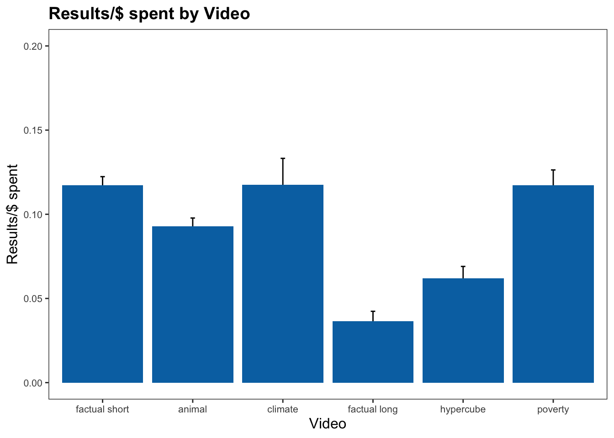
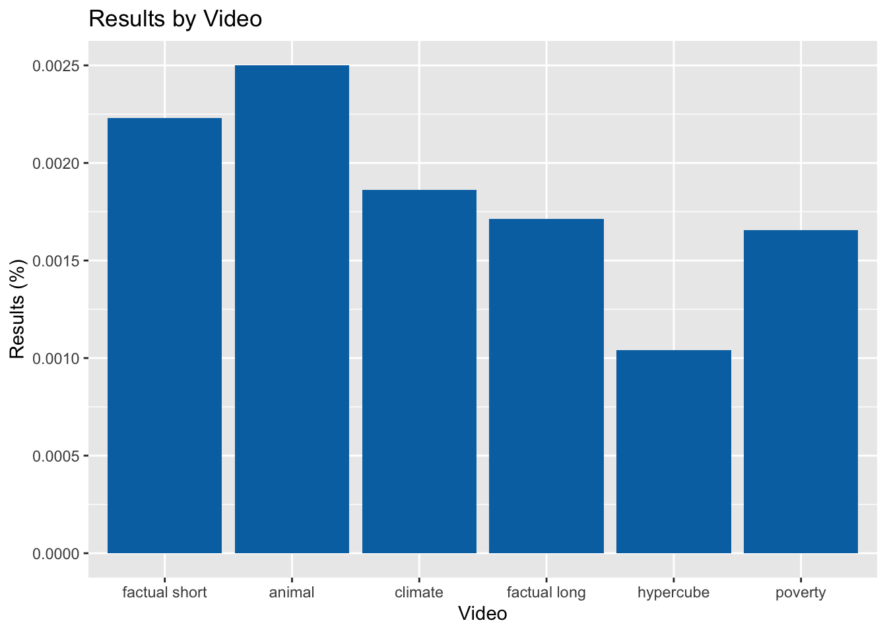
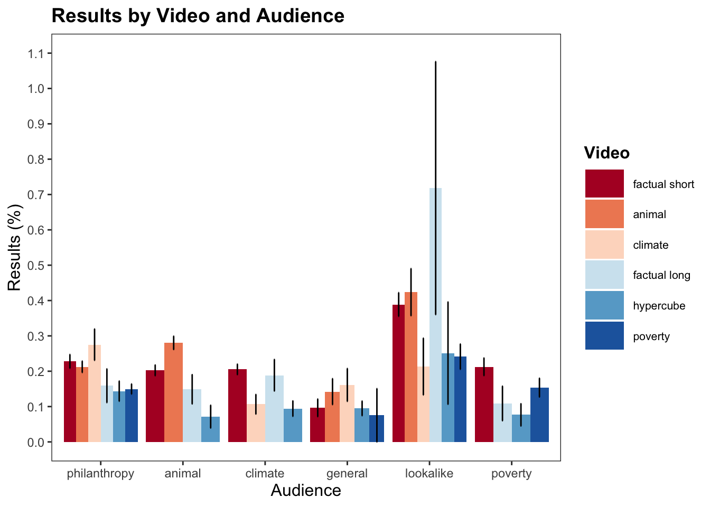
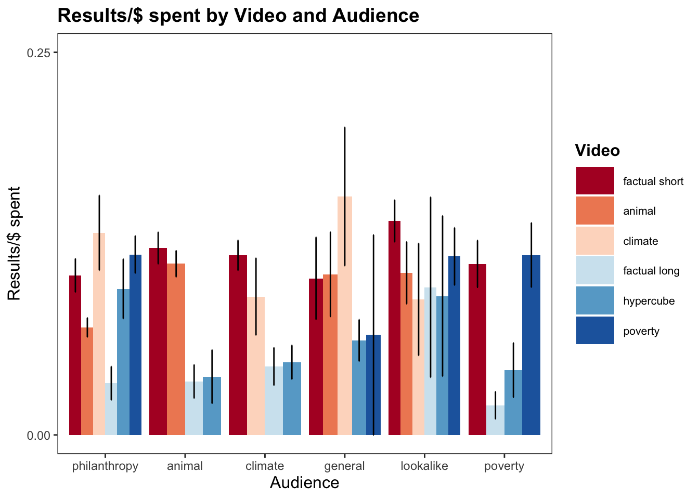

Code
knitr::include_url("https://effective-giving-marketing.gitbook.io/untitled/partner-organizations-and-trials/gwwc/giving-guides-+s")our Effective Giving Guide Lead Generation campaign … ran late November 2021 - January 2022. The objective of this campaign was to see whether a factual or cause led approach was more cost effective at getting people to fill out a form and give us their email in order to download our Effective Giving Guide.
In the original version of our test, we had 1 video for the factual appeal and 3 videos for the cause led approach - 1 for global health and development, 1 for animal welfare and 1 for climate change.
We targeted our ads to audiences we thought were likely to engage based on their interests and demographics, and targeted the cause led videos to a relevant audience, i.e. climate change message to climate change audience.
We also had various text above the videos that were displayed and optimised too.
Details in Gitbook HERE and Gdoc here
knitr::include_url("https://effective-giving-marketing.gitbook.io/untitled/partner-organizations-and-trials/gwwc/giving-guides-+s")Update: The discussion below does not pertain to the actual raw data. The actual original/raw data is collapsed (breakdowns) by demography and ad set, into 2 files:
video breakdown.csv
text breakdown.csv
That data is clearly not identifying individuals; it involves aggregates based on real or assumed characteristics … and, as the other data is derived from it, there is clearly nothing that needs to be hidden there
Note: You must have access to the gwwc raw data to run this. This includes data that was constructed (with what code?) by expanding Facebook’s aggregate reporting.
The files:
textdata_dv_linkclicks.csv videodata_dv_results.csv textdata_dv_results.csv videodata_dv_linkclicks.csv
are gitignored because of size
raw_data_path <- list("gwwc", "gg_raw_data_shareable")
source(here("gwwc", "giving_guides", "input_build_gwwc_gg_data_results.R"))
#source(here("gwwc", "giving_guides", "input_build_gwwc_gg_data_clicks.R"))The code above inputs and builds 2-4 related data frames (tibbles), which were constructed from the collapsed (aggregated) data
gwwc_text_clicks: Observations of link clicks … by texts above video gwwc_vid_clicks: … by video content
(I ignore the ‘click data’ results for now because I don’t think it is particularly meaningful.)
gwwc_text_results: Observations of emails provided … by texts above video gwwc_vid_results: … by video content
#summary(gwwc_vid_results$DV_costadj)
#summary(gwwc_vid_results$DV)
#summary(gwwc_vid_results$ave.cost.impr)Data summary
gwwc_vid_results %>% group_by(Age) %>% summarise(n=n())# A tibble: 7 × 2
Age n
<fct> <int>
1 25-34 287682
2 13-17 444
3 18-24 147805
4 35-44 158352
5 45-54 48728
6 55-64 60904
7 65+ 66198gwwc_vid_results %>% group_by(Gender) %>% summarise(n=n())# A tibble: 3 × 2
Gender n
<chr> <int>
1 female 573705
2 male 178321
3 unknown 18087print(gwwc_vid_results %>% group_by(Gender,Age) %>% summarise(n=n(),cost=mean(ave.cost.impr)),n=40)# A tibble: 21 × 4
# Groups: Gender [3]
Gender Age n cost
<chr> <fct> <int> <dbl>
1 female 25-34 211071 0.0144
2 female 13-17 227 0.0213
3 female 18-24 98953 0.0129
4 female 35-44 121915 0.0174
5 female 45-54 40467 0.0325
6 female 55-64 49900 0.0398
7 female 65+ 51172 0.0583
8 male 25-34 71149 0.0127
9 male 13-17 145 0.0168
10 male 18-24 44107 0.0115
11 male 35-44 32727 0.0153
12 male 45-54 7134 0.0276
13 male 55-64 9671 0.0311
14 male 65+ 13388 0.0390
15 unknown 25-34 5462 0.0138
16 unknown 13-17 72 0.0118
17 unknown 18-24 4745 0.0124
18 unknown 35-44 3710 0.0142
19 unknown 45-54 1127 0.0242
20 unknown 55-64 1333 0.0302
21 unknown 65+ 1638 0.0372print(gwwc_vid_results %>% group_by(Ad.Set.Name) %>% summarise(n=n(),cost=mean(ave.cost.impr)),n=41)# A tibble: 41 × 3
Ad.Set.Name n cost
<chr> <int> <dbl>
1 Animal Welfare + Lookalikes (18-39) 1868 0.0220
2 Animal Welfare (18-39) 20332 0.0144
3 Animal Welfare (Emotional V3) 23796 0.0142
4 Animal Welfare (Emotional) 48494 0.0343
5 Animal Welfare (Factual V2) 25531 0.0334
6 Animal Welfare (Factual V3) 57764 0.0116
7 Animal Welfare (Factual) 9427 0.0328
8 Climate Change (18-39) 49890 0.0133
9 Climate Change (Emotional V3) 346 0.0114
10 Climate Change (Emotional) 2059 0.0245
11 Climate Change (Factual V2) 31245 0.0285
12 Climate Change (Factual V3) 35758 0.0100
13 Climate Change (Factual) 10149 0.0355
14 Climate Change + Lookalikes (18-39) 10377 0.0203
15 General Population (18-39) 57012 0.0130
16 Global Poverty (18-39) 9661 0.0152
17 Global Poverty (Emotional V3) 13568 0.0106
18 Global Poverty (Emotional) 8220 0.0209
19 Global Poverty (Factual V2) 20991 0.0245
20 Global Poverty (Factual V3) 10158 0.00861
21 Global Poverty (Factual) 4841 0.0344
22 Global Poverty + Lookalikes (18-39) 1965 0.0188
23 Lookalikes (18-39) 5834 0.0164
24 Lookalikes (Emotional V3) 16131 0.0163
25 Lookalikes (Emotional) 12779 0.0423
26 Lookalikes (Factual V2) 18526 0.0352
27 Lookalikes (Factual V3) 13383 0.0142
28 Lookalikes (Factual) 706 0.0749
29 Philanthropy (18-39) 43237 0.0146
30 Philanthropy (Emotional V3) 71167 0.0108
31 Philanthropy (Emotional) 77970 0.0329
32 Philanthropy (Factual V2) 24202 0.0360
33 Philanthropy (Factual V3) 20560 0.0104
34 Philanthropy (Factual) 7682 0.0426
35 Philanthropy + Lookalikes (18-39) 4034 0.0208
36 Retargeting (18-39) 158 0.0139
37 Retargeting (Emotional V3) 40 0.00675
38 Retargeting (Emotional) 148 0.0348
39 Retargeting (Factual V2) 35 0.0597
40 Retargeting (Factual V3) 56 0.00804
41 Retargeting (Factual) 13 0.0862 print(gwwc_vid_results %>% group_by(Campaign.name,Ad.Set.Name) %>% summarise(n=n(),cost=mean(ave.cost.impr)),n=100)# A tibble: 52 × 4
# Groups: Campaign.name [7]
Campaign.name Ad.Set.Name n cost
<chr> <chr> <int> <dbl>
1 Giving Guide 2021 - Emotional Animal Welfare (Emot… 48494 0.0343
2 Giving Guide 2021 - Emotional Climate Change (Emot… 2059 0.0245
3 Giving Guide 2021 - Emotional Global Poverty (Emot… 8220 0.0209
4 Giving Guide 2021 - Emotional Lookalikes (Emotiona… 12779 0.0423
5 Giving Guide 2021 - Emotional Philanthropy (Emotio… 77970 0.0329
6 Giving Guide 2021 - Emotional Retargeting (Emotion… 148 0.0348
7 Giving Guide 2021 – Emotional V3 Animal Welfare (Emot… 23796 0.0142
8 Giving Guide 2021 – Emotional V3 Climate Change (Emot… 346 0.0114
9 Giving Guide 2021 – Emotional V3 Global Poverty (Emot… 13568 0.0106
10 Giving Guide 2021 – Emotional V3 Lookalikes (Emotiona… 16131 0.0163
11 Giving Guide 2021 – Emotional V3 Philanthropy (Emotio… 71167 0.0108
12 Giving Guide 2021 – Emotional V3 Retargeting (Emotion… 40 0.00675
13 Giving Guide 2021 – Factual Animal Welfare (Fact… 9427 0.0328
14 Giving Guide 2021 – Factual Climate Change (Fact… 10149 0.0355
15 Giving Guide 2021 – Factual Global Poverty (Fact… 4841 0.0344
16 Giving Guide 2021 – Factual Lookalikes (Factual) 706 0.0749
17 Giving Guide 2021 – Factual Philanthropy (Factua… 7682 0.0426
18 Giving Guide 2021 – Factual Retargeting (Factual) 13 0.0862
19 Giving Guide 2021 – Factual V2 Animal Welfare (Fact… 25531 0.0334
20 Giving Guide 2021 – Factual V2 Climate Change (Fact… 31245 0.0285
21 Giving Guide 2021 – Factual V2 Global Poverty (Fact… 20991 0.0245
22 Giving Guide 2021 – Factual V2 Lookalikes (Factual … 18526 0.0352
23 Giving Guide 2021 – Factual V2 Philanthropy (Factua… 24202 0.0360
24 Giving Guide 2021 – Factual V2 Retargeting (Factual… 35 0.0597
25 Giving Guide 2021 – Factual V3 Animal Welfare (Fact… 57764 0.0116
26 Giving Guide 2021 – Factual V3 Climate Change (Fact… 35758 0.0100
27 Giving Guide 2021 – Factual V3 Global Poverty (Fact… 10158 0.00861
28 Giving Guide 2021 – Factual V3 Lookalikes (Factual … 13383 0.0142
29 Giving Guide 2021 – Factual V3 Philanthropy (Factua… 20560 0.0104
30 Giving Guide 2021 – Factual V3 Retargeting (Factual… 56 0.00804
31 Giving Guide 2021 – Hypercube Brand Video Animal Welfare + Lo… 869 0.0216
32 Giving Guide 2021 – Hypercube Brand Video Animal Welfare (18-3… 6119 0.0171
33 Giving Guide 2021 – Hypercube Brand Video Climate Change (18-3… 14610 0.0184
34 Giving Guide 2021 – Hypercube Brand Video Climate Change + Loo… 5547 0.0226
35 Giving Guide 2021 – Hypercube Brand Video General Population (… 22132 0.0162
36 Giving Guide 2021 – Hypercube Brand Video Global Poverty (18-3… 7048 0.0171
37 Giving Guide 2021 – Hypercube Brand Video Global Poverty + Loo… 788 0.0263
38 Giving Guide 2021 – Hypercube Brand Video Lookalikes (18-39) 1194 0.0250
39 Giving Guide 2021 – Hypercube Brand Video Philanthropy (18-39) 16273 0.0155
40 Giving Guide 2021 – Hypercube Brand Video Philanthropy + Looka… 1128 0.0321
41 Giving Guide 2021 – Hypercube Brand Video Retargeting (18-39) 82 0.0132
42 Giving Guide 2021 – PPCo Creatives Animal Welfare + Lo… 999 0.0223
43 Giving Guide 2021 – PPCo Creatives Animal Welfare (18-3… 14213 0.0133
44 Giving Guide 2021 – PPCo Creatives Climate Change (18-3… 35280 0.0112
45 Giving Guide 2021 – PPCo Creatives Climate Change + Loo… 4830 0.0177
46 Giving Guide 2021 – PPCo Creatives General Population (… 34880 0.0110
47 Giving Guide 2021 – PPCo Creatives Global Poverty (18-3… 2613 0.0102
48 Giving Guide 2021 – PPCo Creatives Global Poverty + Loo… 1177 0.0138
49 Giving Guide 2021 – PPCo Creatives Lookalikes (18-39) 4640 0.0142
50 Giving Guide 2021 – PPCo Creatives Philanthropy (18-39) 26964 0.0140
51 Giving Guide 2021 – PPCo Creatives Philanthropy + Looka… 2906 0.0164
52 Giving Guide 2021 – PPCo Creatives Retargeting (18-39) 76 0.0146 gwwc_vid_results %>% group_by(audience) %>% summarise(n=n(),cost=mean(ave.cost.impr)*100)# A tibble: 7 × 3
audience n cost
<fct> <int> <dbl>
1 philanthropy 248852 2.20
2 animal 187212 2.22
3 climate 139824 1.81
4 general 57012 1.30
5 lookalike 67359 2.66
6 poverty 69404 1.82
7 retargeting 450 2.50gwwc_vid_results %>% group_by(message) %>% summarise(n=n(),cost=mean(ave.cost.impr)*100)# A tibble: 4 × 3
message n cost
<fct> <int> <dbl>
1 Factual 291027 2.24
2 Emotional 274718 2.37
3 Hypercube 75790 1.76
4 PPCo 128578 1.25### CHART DATA
print(gwwc_vid_results %>% group_by(audience,media) %>% summarise(results=mean(DV)*100,SE=std.error(DV)*100,n=n(),cost=mean(ave.cost.impr),CPR=cost/results),n=50)# A tibble: 35 × 7
# Groups: audience [7]
audience media results SE n cost CPR
<fct> <fct> <dbl> <dbl> <int> <dbl> <dbl>
1 philanthropy factual short 0.228 0.0195 59677 0.0212 0.0932
2 philanthropy animal 0.212 0.0163 79537 0.0288 0.135
3 philanthropy climate 0.275 0.0445 13825 0.0194 0.0707
4 philanthropy factual long 0.159 0.0479 6923 0.0442 0.278
5 philanthropy hypercube 0.144 0.0287 17401 0.0165 0.115
6 philanthropy poverty 0.150 0.0145 71489 0.0146 0.0977
7 animal factual short 0.203 0.0149 90843 0.0178 0.0878
8 animal animal 0.280 0.0186 80651 0.0265 0.0945
9 animal factual long 0.149 0.0413 8730 0.0332 0.223
10 animal hypercube 0.0716 0.0320 6988 0.0177 0.247
11 climate factual short 0.205 0.0146 96025 0.0167 0.0816
12 climate climate 0.106 0.0275 14100 0.0136 0.128
13 climate factual long 0.189 0.0444 9542 0.0362 0.192
14 climate hypercube 0.0943 0.0216 20157 0.0195 0.207
15 general factual short 0.0964 0.0249 15563 0.00962 0.0999
16 general animal 0.142 0.0367 10542 0.0135 0.0948
17 general climate 0.161 0.0465 7448 0.0101 0.0627
18 general hypercube 0.0949 0.0207 22132 0.0162 0.171
19 general poverty 0.0754 0.0754 1327 0.0112 0.148
20 lookalike factual short 0.389 0.0336 34218 0.0255 0.0656
21 lookalike animal 0.423 0.0668 9447 0.0399 0.0942
22 lookalike climate 0.213 0.0804 3287 0.0257 0.121
23 lookalike factual long 0.718 0.358 557 0.0782 0.109
24 lookalike hypercube 0.251 0.145 1194 0.0250 0.0994
25 lookalike poverty 0.241 0.0359 18656 0.0207 0.0858
26 poverty factual short 0.212 0.0247 34837 0.0185 0.0873
27 poverty factual long 0.109 0.0486 4595 0.0350 0.322
28 poverty hypercube 0.0766 0.0312 7836 0.0180 0.235
29 poverty poverty 0.154 0.0263 22136 0.0144 0.0936
30 retargeting factual short 0 0 124 0.0254 Inf
31 retargeting animal 0.667 0.667 150 0.0304 0.0456
32 retargeting climate 0 0 43 0.0200 Inf
33 retargeting factual long 8.33 8.33 12 0.0933 0.0112
34 retargeting hypercube 0 0 82 0.0132 Inf
35 retargeting poverty 2.56 2.56 39 0.0128 0.005 #Plot options in common
limits <- aes(ymax = mean_dv + (se_dv), ymin = mean_dv - (se_dv))
dodge <- position_dodge(width = 0.9)
vid_types <-
c("factual short",
"animal",
"climate",
"factual long",
"hypercube",
"poverty")
gg_gg_options <- list(geom_bar(stat = 'identity', position=dodge),
geom_errorbar(limits, position=dodge, width=0.05),
jtools::theme_apa(),
theme(legend.position="none"),
geom_text(aes(label = paste("$",mean_dv %>% round(.,2)), y=5), position = position_dodge(.9), size=4, color="white"),
theme(text=element_text(size=10))
)
grpsumgg <- function(df, gvar, var) {
df %>%
group_by({{gvar}}) %>%
summarise(mean_dv = mean({{var}}, na.rm=TRUE),
se_dv = sd({{var}}, na.rm=TRUE)/sqrt(n()))
}print(gwwc_vid_results %>% filter(ave.cost.impr>0) %>% group_by(media) %>% summarise(results=mean(DV_costadj),SE=std.error(DV_costadj),n=n()),n=50)# A tibble: 6 × 4
media results SE n
<fct> <dbl> <dbl> <int>
1 factual short 0.117 0.00508 331197
2 animal 0.0927 0.00505 180291
3 climate 0.118 0.0156 38663
4 factual long 0.0366 0.00576 30356
5 hypercube 0.0619 0.00711 75785
6 poverty 0.117 0.00922 113608gwwc_vid_results %>%
grpsumgg(media, DV_costadj) %>%
ggplot(aes(x=media, y=mean_dv)) +
gg_gg_options +
geom_bar(stat='identity',fill="#0072B2", position=dodge) +
ylab('Results/$ spent') +
xlab('Video') +
ggtitle('Results/$ spent by Video') +
scale_y_continuous(limits = c(0,.2), breaks=seq(0,.2, by=.05)) +
scale_x_discrete(labels=vid_types)
print(gwwc_vid_results %>% filter(ave.cost.impr>0) %>% group_by(media) %>% summarise(results=100*mean(DV),SE=100*std.error(DV),n=n()),n=50)# A tibble: 6 × 4
media results SE n
<fct> <dbl> <dbl> <int>
1 factual short 0.223 0.00820 331197
2 animal 0.250 0.0118 180291
3 climate 0.186 0.0219 38663
4 factual long 0.171 0.0237 30356
5 hypercube 0.104 0.0117 75785
6 poverty 0.165 0.0121 113608gwwc_vid_results %>%
grpsumgg(media, DV) %>%
ggplot(aes(x=media, y=mean_dv)) +
geom_bar(stat='identity', fill="#0072B2",position=dodge) +
ylab('Results (%)')+
xlab('Video')+
ggtitle('Results by Video')+
scale_x_discrete(labels=vid_types)
Questions/Notes: Removed the retargeting audience
print(gwwc_vid_results %>% filter(ave.cost.impr>0 & audience !="retargeting") %>% group_by(media,audience) %>% summarise(results=mean(DV_costadj),SE=std.error(DV_costadj),n=n()),n=50)# A tibble: 29 × 5
# Groups: media [6]
media audience results SE n
<fct> <fct> <dbl> <dbl> <int>
1 factual short philanthropy 0.104 0.0110 59660
2 factual short animal 0.122 0.0102 90832
3 factual short climate 0.117 0.00970 96005
4 factual short general 0.102 0.0269 15559
5 factual short lookalike 0.140 0.0136 34207
6 factual short poverty 0.112 0.0153 34815
7 animal philanthropy 0.0703 0.00624 79525
8 animal animal 0.112 0.00844 80642
9 animal general 0.105 0.0275 10542
10 animal lookalike 0.106 0.0202 9441
11 climate philanthropy 0.132 0.0245 13810
12 climate climate 0.0904 0.0250 14083
13 climate general 0.156 0.0451 7445
14 climate lookalike 0.0885 0.0366 3283
15 factual long philanthropy 0.0338 0.0109 6923
16 factual long animal 0.0350 0.0107 8729
17 factual long climate 0.0447 0.0121 9542
18 factual long lookalike 0.0965 0.0588 557
19 factual long poverty 0.0194 0.00880 4595
20 hypercube philanthropy 0.0955 0.0194 17400
21 hypercube animal 0.0381 0.0173 6988
22 hypercube climate 0.0475 0.0109 20154
23 hypercube general 0.0618 0.0136 22132
24 hypercube lookalike 0.0907 0.0524 1194
25 hypercube poverty 0.0423 0.0177 7835
26 poverty philanthropy 0.118 0.0121 71466
27 poverty general 0.0653 0.0653 1327
28 poverty lookalike 0.117 0.0187 18652
29 poverty poverty 0.118 0.0209 22129gwwc_vid_results %>% filter(ave.cost.impr>0 & audience !="retargeting") %>%
group_by(media, audience) %>%
summarise(mean_dv = mean(DV_costadj, na.rm=TRUE),
se_dv = sd(DV_costadj, na.rm=TRUE)/sqrt(n())) %>%
ggplot(aes(x=audience, y=mean_dv, group=media, fill=media)) +
gg_gg_options +
labs(fill="Video")+
scale_fill_brewer(palette="RdBu")+
ylab('Results/$ spent')+
xlab('Audience')+
ggtitle('Results/$ spent by Video and Audience')+
theme_apa(legend.font.size = 8,legend.use.title = TRUE)+
scale_y_continuous(limits = c(0,.25), oob = rescale_none, breaks=seq(0,.75, by=.25)) +
scale_x_discrete(labels=c("philanthropy","animal","climate","general","lookalike","poverty","retargeting"))levels(gwwc_vid_results$audience)[1] "philanthropy" "animal" "climate" "general" "lookalike"
[6] "poverty" "retargeting" Questions/Notes: Removed the retargeting audience
print(gwwc_vid_results %>% filter(ave.cost.impr>0 & audience !="retargeting") %>% group_by(media,audience) %>% summarise(results=100*mean(DV),SE=100*std.error(DV),n=n()),n=50)# A tibble: 29 × 5
# Groups: media [6]
media audience results SE n
<fct> <fct> <dbl> <dbl> <int>
1 factual short philanthropy 0.228 0.0195 59660
2 factual short animal 0.203 0.0149 90832
3 factual short climate 0.205 0.0146 96005
4 factual short general 0.0964 0.0249 15559
5 factual short lookalike 0.389 0.0336 34207
6 factual short poverty 0.213 0.0247 34815
7 animal philanthropy 0.213 0.0163 79525
8 animal animal 0.280 0.0186 80642
9 animal general 0.142 0.0367 10542
10 animal lookalike 0.424 0.0669 9441
11 climate philanthropy 0.275 0.0446 13810
12 climate climate 0.107 0.0275 14083
13 climate general 0.161 0.0465 7445
14 climate lookalike 0.213 0.0805 3283
15 factual long philanthropy 0.159 0.0479 6923
16 factual long animal 0.149 0.0413 8729
17 factual long climate 0.189 0.0444 9542
18 factual long lookalike 0.718 0.358 557
19 factual long poverty 0.109 0.0486 4595
20 hypercube philanthropy 0.144 0.0287 17400
21 hypercube animal 0.0716 0.0320 6988
22 hypercube climate 0.0943 0.0216 20154
23 hypercube general 0.0949 0.0207 22132
24 hypercube lookalike 0.251 0.145 1194
25 hypercube poverty 0.0766 0.0313 7835
26 poverty philanthropy 0.150 0.0145 71466
27 poverty general 0.0754 0.0754 1327
28 poverty lookalike 0.241 0.0359 18652
29 poverty poverty 0.154 0.0263 22129gwwc_vid_results %>% filter(ave.cost.impr>0 & audience !="retargeting") %>%
group_by(media, audience) %>%
summarise(mean_dv = 100*mean(DV, na.rm=TRUE),
se_dv = 100*sd(DV, na.rm=TRUE)/sqrt(n())) %>%
ggplot(aes(x=audience, y=mean_dv, group=media, fill=media)) +
gg_gg_options +
labs(fill="Video")+
scale_fill_brewer(palette="RdBu")+
ylab('Results (%)')+
xlab('Audience')+
ggtitle('Results by Video and Audience')+
theme_apa(legend.font.size = 8,legend.use.title = TRUE)+
scale_y_continuous(limits = c(0,1.1), oob = rescale_none, breaks=seq(0,1.1, by=.1)) +
scale_x_discrete(labels=c("philanthropy","animal","climate","general","lookalike","poverty","retargeting"))
print(gwwc_vid_results %>% filter(ave.cost.impr>0 & audience !="retargeting") %>% group_by(audience) %>% summarise(results=mean(DV_costadj),SE=std.error(DV_costadj),n=n()),n=50)# A tibble: 6 × 4
audience results SE n
<fct> <dbl> <dbl> <int>
1 philanthropy 0.0963 0.00518 248784
2 animal 0.110 0.00620 187191
3 climate 0.0996 0.00734 139784
4 general 0.0932 0.0120 57005
5 lookalike 0.125 0.00933 67334
6 poverty 0.0996 0.0104 69374gwwc_vid_results %>% filter(ave.cost.impr>0 & audience !="retargeting") %>%
group_by(audience) %>%
summarise(mean_dv = mean(DV_costadj, na.rm=TRUE),
se_dv = sd(DV_costadj, na.rm=TRUE)/sqrt(n())) %>%
ggplot(aes(x=audience, y=mean_dv)) +
gg_gg_options +
ylab('Results/$ spent')+
xlab('Audience')+
ggtitle('Results/$ spent by Audience')+
scale_y_continuous(limits = c(0,.2), breaks=seq(0,.2, by=.05)) +
scale_x_discrete(labels=c("philanthropy","animal" ,"climate","general","lookalike","poverty"))
print(gwwc_vid_results %>% filter(ave.cost.impr>0 & audience !="retargeting") %>% group_by(audience) %>% summarise(results=100*mean(DV),SE=100*std.error(DV),n=n()),n=50)# A tibble: 6 × 4
audience results SE n
<fct> <dbl> <dbl> <int>
1 philanthropy 0.195 0.00885 248784
2 animal 0.229 0.0110 187191
3 climate 0.178 0.0113 139784
4 general 0.112 0.0140 57005
5 lookalike 0.345 0.0226 67334
6 poverty 0.172 0.0157 69374gwwc_vid_results %>% filter(ave.cost.impr>0 & audience !="retargeting") %>%
group_by(audience) %>%
summarise(mean_dv = 100*mean(DV, na.rm=TRUE),
se_dv = 100*sd(DV, na.rm=TRUE)/sqrt(n())) %>%
ggplot(aes(x=audience, y=mean_dv)) +
gg_gg_options +
ylab('Results (%)')+
xlab('Audience')+
ggtitle('Results by Audience')+
scale_y_continuous(limits = c(0,.4), breaks=seq(0,.4, by=.05)) +
scale_x_discrete(labels=c("philanthropy","animal" ,"climate","general","lookalike","poverty"))
Did not filter out the retargeting audience like i did for the other charts
gwwc_vid_results$Gender <- as.factor(gwwc_vid_results$Gender)
levels(gwwc_vid_results$Gender)[1] "female" "male" "unknown"class(gwwc_vid_results$Age)[1] "factor"gwwc_vid_results$Age <- relevel(gwwc_vid_results$Age, ref="18-24")
gwwc_vid_results$Age <- relevel(gwwc_vid_results$Age, ref="13-17")
levels(gwwc_vid_results$Age)[1] "13-17" "18-24" "25-34" "35-44" "45-54" "55-64" "65+" print(gwwc_vid_results %>% filter(ave.cost.impr>0) %>% group_by(Age,Gender) %>% summarise(results=mean(DV_costadj),SE=std.error(DV_costadj),n=n()),n=50)# A tibble: 21 × 5
# Groups: Age [7]
Age Gender results SE n
<fct> <fct> <dbl> <dbl> <int>
1 13-17 female 0 0 225
2 13-17 male 0 0 135
3 13-17 unknown 0 0 65
4 18-24 female 0.0938 0.00927 98945
5 18-24 male 0.107 0.0154 44087
6 18-24 unknown 0.107 0.0490 4717
7 25-34 female 0.108 0.00629 211055
8 25-34 male 0.107 0.0119 71126
9 25-34 unknown 0.0824 0.0364 5432
10 35-44 female 0.100 0.00728 121903
11 35-44 male 0.116 0.0162 32712
12 35-44 unknown 0.0955 0.0507 3679
13 45-54 female 0.0946 0.00866 40467
14 45-54 male 0.0506 0.0168 7131
15 45-54 unknown 0.234 0.0958 1124
16 55-64 female 0.0886 0.00686 49900
17 55-64 male 0.0865 0.0178 9671
18 55-64 unknown 0.108 0.0516 1331
19 65+ female 0.114 0.00647 51172
20 65+ male 0.118 0.0163 13386
21 65+ unknown 0.129 0.0460 1637gwwc_vid_results %>% filter(ave.cost.impr>0 & Age!="13-17") %>%
group_by(Age, Gender) %>%
summarise(mean_dv = mean(DV_costadj, na.rm=TRUE),
se_dv = sd(DV_costadj, na.rm=TRUE)/sqrt(n())) %>%
ggplot(aes(x=Age, y=mean_dv, group=Gender, fill=Gender)) +
gg_gg_options +
labs(fill="Gender")+
scale_fill_brewer(palette="Paired")+
ylab('Results/$ spent')+
xlab('Age')+
ggtitle('Results/$ spent by Age and Gender')+
theme_apa(legend.font.size = 8,legend.use.title = TRUE)+
scale_y_continuous(limits = c(0,.35), breaks=seq(0,.35, by=.1)) +
scale_x_discrete(labels=c("18-24","25-34","35-44","45-54","55-64","65+" ))
gwwc_vid_results$Gender <- as.factor(gwwc_vid_results$Gender)
levels(gwwc_vid_results$Gender)[1] "female" "male" "unknown"class(gwwc_vid_results$Age)[1] "factor"gwwc_vid_results$Age <- relevel(gwwc_vid_results$Age, ref="18-24")
gwwc_vid_results$Age <- relevel(gwwc_vid_results$Age, ref="13-17")
levels(gwwc_vid_results$Age)[1] "13-17" "18-24" "25-34" "35-44" "45-54" "55-64" "65+" print(gwwc_vid_results %>% filter(ave.cost.impr>0) %>% group_by(Age,Gender) %>% summarise(results=100*mean(DV),SE=std.error(100*DV),n=n()),n=50)# A tibble: 21 × 5
# Groups: Age [7]
Age Gender results SE n
<fct> <fct> <dbl> <dbl> <int>
1 13-17 female 0 0 225
2 13-17 male 0 0 135
3 13-17 unknown 0 0 65
4 18-24 female 0.113 0.0107 98945
5 18-24 male 0.120 0.0165 44087
6 18-24 unknown 0.106 0.0474 4717
7 25-34 female 0.150 0.00843 211055
8 25-34 male 0.120 0.0130 71126
9 25-34 unknown 0.110 0.0451 5432
10 35-44 female 0.171 0.0118 121903
11 35-44 male 0.180 0.0235 32712
12 35-44 unknown 0.109 0.0543 3679
13 45-54 female 0.309 0.0276 40467
14 45-54 male 0.140 0.0443 7131
15 45-54 unknown 0.534 0.217 1124
16 55-64 female 0.351 0.0265 49900
17 55-64 male 0.259 0.0516 9671
18 55-64 unknown 0.376 0.168 1331
19 65+ female 0.629 0.0350 51172
20 65+ male 0.418 0.0558 13386
21 65+ unknown 0.489 0.172 1637gwwc_vid_results %>% filter(ave.cost.impr>0 & Age!="13-17") %>%
group_by(Age, Gender) %>%
summarise(mean_dv = 100*mean(DV, na.rm=TRUE),
se_dv = 100*sd(DV, na.rm=TRUE)/sqrt(n())) %>%
ggplot(aes(x=Age, y=mean_dv, group=Gender, fill=Gender)) +
gg_gg_options +
labs(fill="Gender")+
scale_fill_brewer(palette="Paired")+
ylab('Results (%)')+
xlab('Age')+
ggtitle('Results by Age and Gender')+
theme_apa(legend.font.size = 8,legend.use.title = TRUE)+
scale_y_continuous(limits = c(0,.75), breaks=seq(0,.75, by=.25)) +
scale_x_discrete(labels=c("18-24","25-34","35-44","45-54","55-64","65+" ))
class(gwwc_vid_results$Age)[1] "factor"gwwc_vid_results$Age <- relevel(gwwc_vid_results$Age, ref="18-24")
gwwc_vid_results$Age <- relevel(gwwc_vid_results$Age, ref="13-17")
levels(gwwc_vid_results$Age)[1] "13-17" "18-24" "25-34" "35-44" "45-54" "55-64" "65+" print(gwwc_vid_results %>% filter(ave.cost.impr>0) %>% group_by(Age,media) %>% summarise(results=mean(DV_costadj),SE=std.error(DV_costadj),n=n()),n=50)# A tibble: 39 × 5
# Groups: Age [7]
Age media results SE n
<fct> <fct> <dbl> <dbl> <int>
1 13-17 factual short 0 0 176
2 13-17 animal 0 0 101
3 13-17 climate 0 0 20
4 13-17 factual long 0 NA 1
5 13-17 hypercube 0 0 46
6 13-17 poverty 0 0 81
7 18-24 factual short 0.112 0.0147 55045
8 18-24 animal 0.0853 0.0133 35453
9 18-24 climate 0.0939 0.0317 9513
10 18-24 factual long 0 0 5283
11 18-24 hypercube 0.0785 0.0167 18632
12 18-24 poverty 0.124 0.0225 23823
13 25-34 factual short 0.124 0.00945 124020
14 25-34 animal 0.0919 0.0101 54928
15 25-34 climate 0.141 0.0261 17904
16 25-34 factual long 0.0349 0.0180 5161
17 25-34 hypercube 0.0594 0.00957 38313
18 25-34 poverty 0.115 0.0147 47287
19 35-44 factual short 0.104 0.0104 68690
20 35-44 animal 0.110 0.0128 34263
21 35-44 climate 0.0910 0.0302 6719
22 35-44 factual long 0.0579 0.0208 4336
23 35-44 hypercube 0.0507 0.0130 18794
24 35-44 poverty 0.144 0.0211 25492
25 45-54 factual short 0.0965 0.0146 17482
26 45-54 animal 0.0947 0.0116 19751
27 45-54 climate 0.0742 0.0576 851
28 45-54 factual long 0.0408 0.0160 4548
29 45-54 poverty 0.106 0.0252 6090
30 55-64 factual short 0.106 0.0107 28557
31 55-64 animal 0.0860 0.00967 20126
32 55-64 climate 0.119 0.0613 1221
33 55-64 factual long 0.0299 0.0111 4848
34 55-64 poverty 0.0592 0.0173 6150
35 65+ factual short 0.146 0.00955 37227
36 65+ animal 0.0823 0.00882 15669
37 65+ climate 0.130 0.0332 2435
38 65+ factual long 0.0566 0.0122 6179
39 65+ poverty 0.0488 0.0159 4685gwwc_vid_results %>% filter(ave.cost.impr>0 & Age!="13-17") %>%
group_by(media, Age) %>%
summarise(mean_dv = mean(DV_costadj, na.rm=TRUE),
se_dv = sd(DV_costadj, na.rm=TRUE)/sqrt(n())) %>%
ggplot(aes(x=Age, y=mean_dv, group=media, fill=media)) +
gg_gg_options +
labs(fill="Video")+
scale_fill_brewer(palette="RdBu")+
ylab('Results/$ spent')+
xlab('Age')+
ggtitle('Results/$ spent by Video and Age')+
theme_apa(legend.font.size = 8,legend.use.title = TRUE)+
scale_y_continuous(limits = c(0,.2), breaks=seq(0,.2, by=.05)) +
scale_x_discrete(labels=c("18-24","25-34","35-44","45-54","55-64","65+"))
class(gwwc_vid_results$Age)[1] "factor"gwwc_vid_results$Age <- relevel(gwwc_vid_results$Age, ref="18-24")
gwwc_vid_results$Age <- relevel(gwwc_vid_results$Age, ref="13-17")
levels(gwwc_vid_results$Age)[1] "13-17" "18-24" "25-34" "35-44" "45-54" "55-64" "65+" print(gwwc_vid_results %>% filter(ave.cost.impr>0) %>% group_by(Age,media) %>% summarise(results=100*mean(DV),SE=100*std.error(DV),n=n()),n=50)# A tibble: 39 × 5
# Groups: Age [7]
Age media results SE n
<fct> <fct> <dbl> <dbl> <int>
1 13-17 factual short 0 0 176
2 13-17 animal 0 0 101
3 13-17 climate 0 0 20
4 13-17 factual long 0 NA 1
5 13-17 hypercube 0 0 46
6 13-17 poverty 0 0 81
7 18-24 factual short 0.111 0.0142 55045
8 18-24 animal 0.124 0.0187 35453
9 18-24 climate 0.0946 0.0315 9513
10 18-24 factual long 0 0 5283
11 18-24 hypercube 0.123 0.0257 18632
12 18-24 poverty 0.139 0.0241 23823
13 25-34 factual short 0.146 0.0108 124020
14 25-34 animal 0.158 0.0170 54928
15 25-34 climate 0.173 0.0311 17904
16 25-34 factual long 0.0775 0.0387 5161
17 25-34 hypercube 0.104 0.0165 38313
18 25-34 poverty 0.137 0.0170 47287
19 35-44 factual short 0.156 0.0150 68690
20 35-44 animal 0.233 0.0261 34263
21 35-44 climate 0.149 0.0470 6719
22 35-44 factual long 0.185 0.0652 4336
23 35-44 hypercube 0.0851 0.0213 18794
24 35-44 poverty 0.196 0.0277 25492
25 45-54 factual short 0.257 0.0383 17482
26 45-54 animal 0.349 0.0420 19751
27 45-54 climate 0.235 0.166 851
28 45-54 factual long 0.154 0.0581 4548
29 45-54 poverty 0.296 0.0696 6090
30 55-64 factual short 0.347 0.0348 28557
31 55-64 animal 0.407 0.0449 20126
32 55-64 climate 0.328 0.164 1221
33 55-64 factual long 0.165 0.0583 4848
34 55-64 poverty 0.195 0.0563 6150
35 65+ factual short 0.661 0.0420 37227
36 65+ animal 0.568 0.0600 15669
37 65+ climate 0.657 0.164 2435
38 65+ factual long 0.405 0.0808 6179
39 65+ poverty 0.213 0.0674 4685gwwc_vid_results %>% filter(ave.cost.impr>0 & Age !="13-17") %>%
group_by(media, Age) %>%
summarise(mean_dv = 100*mean(DV, na.rm=TRUE),
se_dv = 100*sd(DV, na.rm=TRUE)/sqrt(n())) %>%
ggplot(aes(x=Age, y=mean_dv, group=media, fill=media)) +
gg_gg_options +
labs(fill="Video")+
scale_fill_brewer(palette="RdBu")+
ylab('Results (%)')+
xlab('Age')+
ggtitle('Results by Video and Age')+
theme_apa(legend.font.size = 8,legend.use.title = TRUE)+
scale_y_continuous(limits = c(0,.85), breaks=seq(0,.85, by=.25)) +
scale_x_discrete(labels=c("18-24","25-34","35-44","45-54","55-64","65+"))
summary(lm(data = gwwc_vid_results, DV~Gender*Age+ave.cost.impr))
Call:
lm(formula = DV ~ Gender * Age + ave.cost.impr, data = gwwc_vid_results)
Residuals:
Min 1Q Median 3Q Max
-0.04779 -0.00203 -0.00151 -0.00129 0.99914
Coefficients:
Estimate Std. Error t value Pr(>|t|)
(Intercept) -9.180e-04 3.006e-03 -0.305 0.760
Gendermale 1.965e-04 4.810e-03 0.041 0.967
Genderunknown 4.097e-04 6.120e-03 0.067 0.947
Age18-24 1.497e-03 3.007e-03 0.498 0.619
Age25-34 1.799e-03 3.005e-03 0.599 0.549
Age35-44 1.874e-03 3.006e-03 0.623 0.533
Age45-54 2.607e-03 3.012e-03 0.865 0.387
Age55-64 2.712e-03 3.012e-03 0.900 0.368
Age65+ 4.702e-03 3.019e-03 1.557 0.119
ave.cost.impr 4.306e-02 6.608e-03 6.516 7.25e-11 ***
Gendermale:Age18-24 -6.997e-05 4.817e-03 -0.015 0.988
Genderunknown:Age18-24 -4.670e-04 6.156e-03 -0.076 0.940
Gendermale:Age25-34 -4.299e-04 4.814e-03 -0.089 0.929
Genderunknown:Age25-34 -7.873e-04 6.151e-03 -0.128 0.898
Gendermale:Age35-44 -6.757e-06 4.818e-03 -0.001 0.999
Genderunknown:Age35-44 -8.994e-04 6.166e-03 -0.146 0.884
Gendermale:Age45-54 -1.671e-03 4.845e-03 -0.345 0.730
Genderunknown:Age45-54 2.184e-03 6.270e-03 0.348 0.728
Gendermale:Age55-64 -7.455e-04 4.836e-03 -0.154 0.877
Genderunknown:Age55-64 2.492e-04 6.247e-03 0.040 0.968
Gendermale:Age65+ -1.479e-03 4.831e-03 -0.306 0.760
Genderunknown:Age65+ -9.135e-04 6.224e-03 -0.147 0.883
---
Signif. codes: 0 '***' 0.001 '**' 0.01 '*' 0.05 '.' 0.1 ' ' 1
Residual standard error: 0.04524 on 770091 degrees of freedom
Multiple R-squared: 0.0009605, Adjusted R-squared: 0.0009332
F-statistic: 35.25 on 21 and 770091 DF, p-value: < 2.2e-16summary(lm(data = gwwc_vid_results,DV~Gender*Age))
Call:
lm(formula = DV ~ Gender * Age, data = gwwc_vid_results)
Residuals:
Min 1Q Median 3Q Max
-0.00629 -0.00180 -0.00150 -0.00120 0.99895
Coefficients:
Estimate Std. Error t value Pr(>|t|)
(Intercept) 3.049e-14 3.003e-03 0.000 1.0000
Gendermale -2.692e-14 4.810e-03 0.000 1.0000
Genderunknown 3.038e-14 6.119e-03 0.000 1.0000
Age18-24 1.132e-03 3.006e-03 0.376 0.7066
Age25-34 1.502e-03 3.004e-03 0.500 0.6172
Age35-44 1.706e-03 3.006e-03 0.568 0.5703
Age45-54 3.089e-03 3.011e-03 1.026 0.3050
Age55-64 3.507e-03 3.010e-03 1.165 0.2439
Age65+ 6.293e-03 3.010e-03 2.091 0.0365 *
Gendermale:Age18-24 6.977e-05 4.817e-03 0.014 0.9884
Genderunknown:Age18-24 -7.811e-05 6.156e-03 -0.013 0.9899
Gendermale:Age25-34 -3.072e-04 4.814e-03 -0.064 0.9491
Genderunknown:Age25-34 -4.034e-04 6.151e-03 -0.066 0.9477
Gendermale:Age35-44 9.669e-05 4.818e-03 0.020 0.9840
Genderunknown:Age35-44 -6.279e-04 6.166e-03 -0.102 0.9189
Gendermale:Age45-54 -1.687e-03 4.845e-03 -0.348 0.7277
Genderunknown:Age45-54 2.235e-03 6.270e-03 0.356 0.7215
Gendermale:Age55-64 -9.220e-04 4.836e-03 -0.191 0.8488
Genderunknown:Age55-64 2.439e-04 6.247e-03 0.039 0.9689
Gendermale:Age65+ -2.110e-03 4.830e-03 -0.437 0.6623
Genderunknown:Age65+ -1.408e-03 6.224e-03 -0.226 0.8210
---
Signif. codes: 0 '***' 0.001 '**' 0.01 '*' 0.05 '.' 0.1 ' ' 1
Residual standard error: 0.04524 on 770092 degrees of freedom
Multiple R-squared: 0.0009054, Adjusted R-squared: 0.0008794
F-statistic: 34.89 on 20 and 770092 DF, p-value: < 2.2e-16just demographics, not control
summary(data = lm(gwwc_vid_results,DV~Gender+Age))Error in as.data.frame.default(data): cannot coerce class '"formula"' to a data.framejust demographic, controlling for cost
summary(lm(gwwc_vid_results,DV~Gender+Age+ave.cost.impr))Error in h(simpleError(msg, call)): error in evaluating the argument 'object' in selecting a method for function 'summary': cannot coerce class '"formula"' to a data.framemeans and standard errors for age groups/gender
print(gwwc_vid_results %>% group_by(Gender,Age) %>% summarise(results=mean(DV)*100,SE=std.error(DV)*100,n=n(),cost=mean(ave.cost.impr),CPR=cost/results),n=50)# A tibble: 21 × 7
# Groups: Gender [3]
Gender Age results SE n cost CPR
<fct> <fct> <dbl> <dbl> <int> <dbl> <dbl>
1 female 13-17 0 0 227 0.0213 Inf
2 female 18-24 0.113 0.0107 98953 0.0129 0.114
3 female 25-34 0.150 0.00843 211071 0.0144 0.0960
4 female 35-44 0.171 0.0118 121915 0.0174 0.102
5 female 45-54 0.309 0.0276 40467 0.0325 0.105
6 female 55-64 0.351 0.0265 49900 0.0398 0.113
7 female 65+ 0.629 0.0350 51172 0.0583 0.0926
8 male 13-17 0 0 145 0.0168 Inf
9 male 18-24 0.120 0.0165 44107 0.0115 0.0960
10 male 25-34 0.119 0.0130 71149 0.0127 0.106
11 male 35-44 0.180 0.0234 32727 0.0153 0.0847
12 male 45-54 0.140 0.0443 7134 0.0276 0.197
13 male 55-64 0.259 0.0516 9671 0.0311 0.120
14 male 65+ 0.418 0.0558 13388 0.0390 0.0933
15 unknown 13-17 0 0 72 0.0118 Inf
16 unknown 18-24 0.105 0.0471 4745 0.0124 0.117
17 unknown 25-34 0.110 0.0448 5462 0.0138 0.126
18 unknown 35-44 0.108 0.0539 3710 0.0142 0.132
19 unknown 45-54 0.532 0.217 1127 0.0242 0.0454
20 unknown 55-64 0.375 0.167 1333 0.0302 0.0804
21 unknown 65+ 0.488 0.172 1638 0.0372 0.0763hist(gwwc_vid_results$DV_costadj[gwwc_vid_results$DV_costadj>0])
hist(gwwc_vid_results$DV_costadj[gwwc_vid_results$DV_costadj>=0])
summary(lm(gwwc_vid_results,DV~Gender+Age+ave.cost.impr))Error in h(simpleError(msg, call)): error in evaluating the argument 'object' in selecting a method for function 'summary': cannot coerce class '"formula"' to a data.framesummary(lm(gwwc_vid_results, DV_costadj~Gender+Age))Error in h(simpleError(msg, call)): error in evaluating the argument 'object' in selecting a method for function 'summary': cannot coerce class '"formula"' to a data.framemain effects
summary(lm(gwwc_vid_results,DV~Gender+Age+ave.cost.impr+audience))Error in h(simpleError(msg, call)): error in evaluating the argument 'object' in selecting a method for function 'summary': cannot coerce class '"formula"' to a data.frameNEW DV
summary(lm(gwwc_vid_results,DV_costadj~Gender+Age+audience))Error in h(simpleError(msg, call)): error in evaluating the argument 'object' in selecting a method for function 'summary': cannot coerce class '"formula"' to a data.frame #interactions
summary(lm(gwwc_vid_results,DV~Gender*audience+ave.cost.impr+Age))Error in h(simpleError(msg, call)): error in evaluating the argument 'object' in selecting a method for function 'summary': cannot coerce class '"formula"' to a data.frame## NEW DV
summary(lm(gwwc_vid_results,DV_costadj~Gender*audience+Age))Error in h(simpleError(msg, call)): error in evaluating the argument 'object' in selecting a method for function 'summary': cannot coerce class '"formula"' to a data.frame summary(lm(gwwc_vid_results,DV~Age*audience+ave.cost.impr+Gender))Error in h(simpleError(msg, call)): error in evaluating the argument 'object' in selecting a method for function 'summary': cannot coerce class '"formula"' to a data.frame #means for audience
print(gwwc_vid_results %>% group_by(audience) %>% summarise(results=mean(DV)*100,SE=std.error(DV)*100,n=n(),cost=mean(ave.cost.impr),CPR=cost/results),n=50)# A tibble: 7 × 6
audience results SE n cost CPR
<fct> <dbl> <dbl> <int> <dbl> <dbl>
1 philanthropy 0.195 0.00885 248852 0.0220 0.112
2 animal 0.229 0.0110 187212 0.0222 0.0973
3 climate 0.178 0.0113 139824 0.0181 0.102
4 general 0.112 0.0140 57012 0.0130 0.116
5 lookalike 0.344 0.0226 67359 0.0266 0.0773
6 poverty 0.171 0.0157 69404 0.0182 0.106
7 retargeting 0.667 0.384 450 0.0250 0.0376no controls
summary(lm(gwwc_vid_results,DV~message))Error in h(simpleError(msg, call)): error in evaluating the argument 'object' in selecting a method for function 'summary': cannot coerce class '"formula"' to a data.frame #control for cost only
summary(lm(gwwc_vid_results,DV~message+ave.cost.impr))Error in h(simpleError(msg, call)): error in evaluating the argument 'object' in selecting a method for function 'summary': cannot coerce class '"formula"' to a data.frame #check results with campaign
summary(lm(gwwc_vid_results,DV~Campaign.name))Error in h(simpleError(msg, call)): error in evaluating the argument 'object' in selecting a method for function 'summary': cannot coerce class '"formula"' to a data.frame #check results with campaign and cost control
summary(lm(gwwc_vid_results,DV~Campaign.name+ave.cost.impr))Error in h(simpleError(msg, call)): error in evaluating the argument 'object' in selecting a method for function 'summary': cannot coerce class '"formula"' to a data.framewith controls
summary(lm(gwwc_vid_results,DV~Gender+Age+ave.cost.impr+audience+message))Error in h(simpleError(msg, call)): error in evaluating the argument 'object' in selecting a method for function 'summary': cannot coerce class '"formula"' to a data.frame #interactions
#with audience
summary(lm(gwwc_vid_results,DV~message*audience+ave.cost.impr+Age+Gender))Error in h(simpleError(msg, call)): error in evaluating the argument 'object' in selecting a method for function 'summary': cannot coerce class '"formula"' to a data.frame #with Gender
summary(lm(gwwc_vid_results,DV~message*Gender+ave.cost.impr+Age+audience))Error in h(simpleError(msg, call)): error in evaluating the argument 'object' in selecting a method for function 'summary': cannot coerce class '"formula"' to a data.frame #with Age (emotional much worse with ages 65+)
summary(lm(gwwc_vid_results,DV~message*Age+ave.cost.impr+Age+audience))Error in h(simpleError(msg, call)): error in evaluating the argument 'object' in selecting a method for function 'summary': cannot coerce class '"formula"' to a data.frameinteraction with age and campaign restriction
summary(lm(gwwc_vid_results,DV~message*agetrin+message*restriction18_39+ave.cost.impr+Age+Gender))Error in h(simpleError(msg, call)): error in evaluating the argument 'object' in selecting a method for function 'summary': cannot coerce class '"formula"' to a data.framesummary(lm(gwwc_vid_results,DV~message*agetrin+message*restriction18_39+ave.cost.impr))Error in h(simpleError(msg, call)): error in evaluating the argument 'object' in selecting a method for function 'summary': cannot coerce class '"formula"' to a data.framein just early campaigns
summary(lm(subset(data,restriction18_39==0),DV~message*agetrin+ave.cost.impr))Error in h(simpleError(msg, call)): error in evaluating the argument 'object' in selecting a method for function 'summary': object 'restriction18_39' not foundno controls
summary(lm(gwwc_vid_results,DV~media))Error in h(simpleError(msg, call)): error in evaluating the argument 'object' in selecting a method for function 'summary': cannot coerce class '"formula"' to a data.framemeans and SEs
gwwc_vid_results %>% group_by(media) %>% summarise(results=mean(DV)*100,SE=std.error(DV)*100,n=n(),cost=mean(ave.cost.impr),CPR=cost/results)# A tibble: 6 × 6
media results SE n cost CPR
<fct> <dbl> <dbl> <int> <dbl> <dbl>
1 factual short 0.223 0.00820 331287 0.0186 0.0834
2 animal 0.250 0.0118 180327 0.0274 0.110
3 climate 0.186 0.0219 38703 0.0160 0.0862
4 factual long 0.171 0.0237 30359 0.0378 0.221
5 hypercube 0.104 0.0117 75790 0.0176 0.169
6 poverty 0.165 0.0121 113647 0.0155 0.0939control for cost only
summary(lm(gwwc_vid_results,DV~media+ave.cost.impr))Error in h(simpleError(msg, call)): error in evaluating the argument 'object' in selecting a method for function 'summary': cannot coerce class '"formula"' to a data.framesummary(lm(gwwc_vid_results,DV_costadj~media))####THIS IS GOOD?Error in h(simpleError(msg, call)): error in evaluating the argument 'object' in selecting a method for function 'summary': cannot coerce class '"formula"' to a data.framewith controls
summary(lm(gwwc_vid_results,DV~Gender+Age+ave.cost.impr+audience+media))Error in h(simpleError(msg, call)): error in evaluating the argument 'object' in selecting a method for function 'summary': cannot coerce class '"formula"' to a data.framesummary(lm(gwwc_vid_results,DV_costadj~Gender+Age+audience+media))Error in h(simpleError(msg, call)): error in evaluating the argument 'object' in selecting a method for function 'summary': cannot coerce class '"formula"' to a data.frameinteractions
summary(lm(gwwc_vid_results,DV~media*Age+media*Gender+media*audience+ave.cost.impr))Error in h(simpleError(msg, call)): error in evaluating the argument 'object' in selecting a method for function 'summary': cannot coerce class '"formula"' to a data.framesummary(lm(gwwc_vid_results,DV_costadj~media*Age+media*Gender+media*audience))Error in h(simpleError(msg, call)): error in evaluating the argument 'object' in selecting a method for function 'summary': cannot coerce class '"formula"' to a data.framesummary(lm(gwwc_vid_results,DV~media*Age+media*Gender+media*audience))Error in h(simpleError(msg, call)): error in evaluating the argument 'object' in selecting a method for function 'summary': cannot coerce class '"formula"' to a data.framesummary(lm(gwwc_vid_results,DV_costadj~Age+Gender+media*audience))Error in h(simpleError(msg, call)): error in evaluating the argument 'object' in selecting a method for function 'summary': cannot coerce class '"formula"' to a data.framewith audience
summary(lm(gwwc_vid_results,DV~media*audience+ave.cost.impr+Age+Gender))Error in h(simpleError(msg, call)): error in evaluating the argument 'object' in selecting a method for function 'summary': cannot coerce class '"formula"' to a data.framemeans and SEs
print(gwwc_vid_results %>% group_by(audience,media) %>% summarise(results=mean(DV)*100,SE=std.error(DV)*100,n=n(),cost=mean(ave.cost.impr),CPR=cost/results),n=50)# A tibble: 35 × 7
# Groups: audience [7]
audience media results SE n cost CPR
<fct> <fct> <dbl> <dbl> <int> <dbl> <dbl>
1 philanthropy factual short 0.228 0.0195 59677 0.0212 0.0932
2 philanthropy animal 0.212 0.0163 79537 0.0288 0.135
3 philanthropy climate 0.275 0.0445 13825 0.0194 0.0707
4 philanthropy factual long 0.159 0.0479 6923 0.0442 0.278
5 philanthropy hypercube 0.144 0.0287 17401 0.0165 0.115
6 philanthropy poverty 0.150 0.0145 71489 0.0146 0.0977
7 animal factual short 0.203 0.0149 90843 0.0178 0.0878
8 animal animal 0.280 0.0186 80651 0.0265 0.0945
9 animal factual long 0.149 0.0413 8730 0.0332 0.223
10 animal hypercube 0.0716 0.0320 6988 0.0177 0.247
11 climate factual short 0.205 0.0146 96025 0.0167 0.0816
12 climate climate 0.106 0.0275 14100 0.0136 0.128
13 climate factual long 0.189 0.0444 9542 0.0362 0.192
14 climate hypercube 0.0943 0.0216 20157 0.0195 0.207
15 general factual short 0.0964 0.0249 15563 0.00962 0.0999
16 general animal 0.142 0.0367 10542 0.0135 0.0948
17 general climate 0.161 0.0465 7448 0.0101 0.0627
18 general hypercube 0.0949 0.0207 22132 0.0162 0.171
19 general poverty 0.0754 0.0754 1327 0.0112 0.148
20 lookalike factual short 0.389 0.0336 34218 0.0255 0.0656
21 lookalike animal 0.423 0.0668 9447 0.0399 0.0942
22 lookalike climate 0.213 0.0804 3287 0.0257 0.121
23 lookalike factual long 0.718 0.358 557 0.0782 0.109
24 lookalike hypercube 0.251 0.145 1194 0.0250 0.0994
25 lookalike poverty 0.241 0.0359 18656 0.0207 0.0858
26 poverty factual short 0.212 0.0247 34837 0.0185 0.0873
27 poverty factual long 0.109 0.0486 4595 0.0350 0.322
28 poverty hypercube 0.0766 0.0312 7836 0.0180 0.235
29 poverty poverty 0.154 0.0263 22136 0.0144 0.0936
30 retargeting factual short 0 0 124 0.0254 Inf
31 retargeting animal 0.667 0.667 150 0.0304 0.0456
32 retargeting climate 0 0 43 0.0200 Inf
33 retargeting factual long 8.33 8.33 12 0.0933 0.0112
34 retargeting hypercube 0 0 82 0.0132 Inf
35 retargeting poverty 2.56 2.56 39 0.0128 0.005 print(gwwc_vid_results %>% filter(gwwc_vid_results$ave.cost.impr>0) %>% group_by(audience,media) %>% summarise(results=mean(DV_costadj),SE=std.error(DV_costadj),n=n()),n=50)# A tibble: 35 × 5
# Groups: audience [7]
audience media results SE n
<fct> <fct> <dbl> <dbl> <int>
1 philanthropy factual short 0.104 0.0110 59660
2 philanthropy animal 0.0703 0.00624 79525
3 philanthropy climate 0.132 0.0245 13810
4 philanthropy factual long 0.0338 0.0109 6923
5 philanthropy hypercube 0.0955 0.0194 17400
6 philanthropy poverty 0.118 0.0121 71466
7 animal factual short 0.122 0.0102 90832
8 animal animal 0.112 0.00844 80642
9 animal factual long 0.0350 0.0107 8729
10 animal hypercube 0.0381 0.0173 6988
11 climate factual short 0.117 0.00970 96005
12 climate climate 0.0904 0.0250 14083
13 climate factual long 0.0447 0.0121 9542
14 climate hypercube 0.0475 0.0109 20154
15 general factual short 0.102 0.0269 15559
16 general animal 0.105 0.0275 10542
17 general climate 0.156 0.0451 7445
18 general hypercube 0.0618 0.0136 22132
19 general poverty 0.0653 0.0653 1327
20 lookalike factual short 0.140 0.0136 34207
21 lookalike animal 0.106 0.0202 9441
22 lookalike climate 0.0885 0.0366 3283
23 lookalike factual long 0.0965 0.0588 557
24 lookalike hypercube 0.0907 0.0524 1194
25 lookalike poverty 0.117 0.0187 18652
26 poverty factual short 0.112 0.0153 34815
27 poverty factual long 0.0194 0.00880 4595
28 poverty hypercube 0.0423 0.0177 7835
29 poverty poverty 0.118 0.0209 22129
30 retargeting factual short 0 0 119
31 retargeting animal 0.0464 0.0464 141
32 retargeting climate 0 0 42
33 retargeting factual long 0.326 0.326 10
34 retargeting hypercube 0 0 82
35 retargeting poverty 0.490 0.490 34NEW DV with audience
summary(lm(gwwc_vid_results,DV_costadj~media*audience+Age+Gender))Error in h(simpleError(msg, call)): error in evaluating the argument 'object' in selecting a method for function 'summary': cannot coerce class '"formula"' to a data.framemeans and SEs
print(gwwc_vid_results %>% group_by(audience,media) %>% summarise(results=mean(DV_costadj)*100,SE=std.error(DV_costadj)*100,n=n()),n=50)# A tibble: 35 × 5
# Groups: audience [7]
audience media results SE n
<fct> <fct> <dbl> <dbl> <int>
1 philanthropy factual short NaN 1.10 59677
2 philanthropy animal NaN 0.624 79537
3 philanthropy climate NaN 2.45 13825
4 philanthropy factual long 3.38 1.09 6923
5 philanthropy hypercube NaN 1.94 17401
6 philanthropy poverty NaN 1.21 71489
7 animal factual short NaN 1.02 90843
8 animal animal NaN 0.844 80651
9 animal factual long NaN 1.07 8730
10 animal hypercube 3.81 1.73 6988
11 climate factual short NaN 0.970 96025
12 climate climate NaN 2.50 14100
13 climate factual long 4.47 1.21 9542
14 climate hypercube NaN 1.09 20157
15 general factual short NaN 2.69 15563
16 general animal 10.5 2.75 10542
17 general climate NaN 4.51 7448
18 general hypercube 6.18 1.36 22132
19 general poverty 6.53 6.53 1327
20 lookalike factual short NaN 1.36 34218
21 lookalike animal NaN 2.02 9447
22 lookalike climate NaN 3.66 3287
23 lookalike factual long 9.65 5.88 557
24 lookalike hypercube 9.07 5.24 1194
25 lookalike poverty NaN 1.87 18656
26 poverty factual short NaN 1.53 34837
27 poverty factual long 1.94 0.880 4595
28 poverty hypercube NaN 1.77 7836
29 poverty poverty NaN 2.09 22136
30 retargeting factual short NaN 0 124
31 retargeting animal NaN 4.64 150
32 retargeting climate NaN 0 43
33 retargeting factual long NaN 32.6 12
34 retargeting hypercube 0 0 82
35 retargeting poverty NaN 49.0 39with Gender
summary(lm(gwwc_vid_results,DV~media*Gender+ave.cost.impr+Age+audience))Error in h(simpleError(msg, call)): error in evaluating the argument 'object' in selecting a method for function 'summary': cannot coerce class '"formula"' to a data.framemeans and SEs gwwc_vid_results %>% group_by(Gender,media) %>% summarise(results=mean(DV)100,SE=std.error(DV)100,n=n(),cost=mean(ave.cost.impr),CPR=cost/results)
with Age (emotional much worse with ages 65+) summary(lm(gwwc_vid_results,DV~media*Age+ave.cost.impr+Age+audience))
means and SEs print(gwwc_vid_results %>% group_by(Age,media) %>% summarise(results=mean(DV)100,SE=std.error(DV)100,n=n(),cost=mean(ave.cost.impr),CPR=cost/results),n = 50) print(gwwc_vid_results %>% group_by(audience,Age,media) %>% summarise(results=mean(DV)100,SE=std.error(DV)100,n=n(),cost=mean(ave.cost.impr),CPR=cost/results),n = 500)
interaction with age and campaign restriction - old people really hated factual long
summary(lm(gwwc_vid_results,DV~media*agetrin+media*restriction18_39+ave.cost.impr+Age+Gender))Error in h(simpleError(msg, call)): error in evaluating the argument 'object' in selecting a method for function 'summary': cannot coerce class '"formula"' to a data.framesummary(lm(gwwc_vid_results,DV~media*agetrin+media*restriction18_39+ave.cost.impr))Error in h(simpleError(msg, call)): error in evaluating the argument 'object' in selecting a method for function 'summary': cannot coerce class '"formula"' to a data.framein just early campaigns
summary(subset(gwwc_vid_results,restriction18_39==0),DV~media*agetrin+ave.cost.impr))Error: <text>:1:85: unexpected ')'
1: summary(subset(gwwc_vid_results,restriction18_39==0),DV~media*agetrin+ave.cost.impr))
^means and SEs
gwwc_vid_results %>% filter(restriction18_39==0) %>% group_by(Age,media) %>% summarise(results=mean(DV)*100,SE=std.error(DV)*100,n=n(),cost=mean(ave.cost.impr),CPR=cost/results)# A tibble: 34 × 7
# Groups: Age [7]
Age media results SE n cost CPR
<fct> <fct> <dbl> <dbl> <int> <dbl> <dbl>
1 13-17 factual short 0 0 15 0.0193 Inf
2 13-17 animal 0 0 23 0.0170 Inf
3 13-17 factual long 0 0 2 0.005 Inf
4 13-17 poverty 0 0 12 0.0167 Inf
5 18-24 factual short 0.114 0.0378 7928 0.0149 0.131
6 18-24 animal 0.147 0.0322 14242 0.0178 0.121
7 18-24 climate 0.169 0.169 592 0.0138 0.0817
8 18-24 factual long 0 0 5283 0.0156 Inf
9 18-24 poverty 0.161 0.0658 3720 0.0170 0.105
10 25-34 factual short 0.194 0.0343 16480 0.0173 0.089
# … with 24 more rowsregressions with interactions
summary(lm(gwwc_vid_results,DV_costadj~Gender*Age)) #no significant effectsError in h(simpleError(msg, call)): error in evaluating the argument 'object' in selecting a method for function 'summary': cannot coerce class '"formula"' to a data.frameregressions with no interactions just demographic, not control
summary(lm(gwwc_vid_results,DV_costadj~Gender+Age))Error in h(simpleError(msg, call)): error in evaluating the argument 'object' in selecting a method for function 'summary': cannot coerce class '"formula"' to a data.framemeans and standard errors for age groups/gender
print(gwwc_vid_results %>% group_by(Gender,Age) %>% summarise(results=mean(DV_costadj)*100,SE=std.error(DV_costadj)*100,n=n()),n=50) ##idk if the changes i made to this line make sense# A tibble: 21 × 5
# Groups: Gender [3]
Gender Age results SE n
<fct> <fct> <dbl> <dbl> <int>
1 female 13-17 NaN 0 227
2 female 18-24 NaN 0.927 98953
3 female 25-34 NaN 0.629 211071
4 female 35-44 NaN 0.728 121915
5 female 45-54 9.46 0.866 40467
6 female 55-64 8.86 0.686 49900
7 female 65+ 11.4 0.647 51172
8 male 13-17 NaN 0 145
9 male 18-24 NaN 1.54 44107
10 male 25-34 NaN 1.19 71149
11 male 35-44 NaN 1.62 32727
12 male 45-54 NaN 1.68 7134
13 male 55-64 8.65 1.78 9671
14 male 65+ NaN 1.63 13388
15 unknown 13-17 NaN 0 72
16 unknown 18-24 NaN 4.90 4745
17 unknown 25-34 NaN 3.64 5462
18 unknown 35-44 NaN 5.07 3710
19 unknown 45-54 NaN 9.58 1127
20 unknown 55-64 NaN 5.16 1333
21 unknown 65+ NaN 4.60 1638summary(gwwc_vid_results %>% lm(data = ., DV_costadj~Gender+Age+Video))
Call:
lm(formula = DV_costadj ~ Gender + Age + Video, data = .)
Residuals:
Min 1Q Median 3Q Max
-0.300 -0.119 -0.112 -0.090 157.205
Coefficients:
Estimate
(Intercept) -0.068648
Gendermale 0.005780
Genderunknown 0.005761
Age18-24 0.102058
Age25-34 0.109275
Age35-44 0.107242
Age45-54 0.105299
Age55-64 0.098956
Age65+ 0.123285
Video23849025484210764 -0.041628
Video23849025485710764 0.053886
Video23849025485890764 -0.010099
Video23849025487230764 -0.040986
Video23849025487530764 0.022626
Video23849025488920764 -0.011526
Video23849025488960764 0.008814
Video23849025491000764 0.007588
Video23849025491170764 0.064694
Video23849025495190764 0.052844
Video23849025683240764 -0.040811
Video23849025692820764 -0.041228
Video23849025697500764 0.253101
Video23849025714780764 -0.040525
Video23849025716920764 -0.043020
Video23849025719690764 -0.039634
Video23849025723100764 -0.041807
Video23849025757280764 -0.041245
Video23849025790530764 0.244480
Video23849025798430764 -0.040489
VideoAuto_Cropped_AR_4_X_5_DCO_Free Effective Giving Guide 2021 0.037144
VideoAuto_Cropped_AR_4_X_5_DCO_gg_factual_short.mp4 -0.017002
VideoAuto_Cropped_AR_4_X_5_DCO_ggwc_emotional_set_1 (1).mp4 0.025978
VideoAuto_Cropped_AR_4_X_5_DCO_ggwc_emotional_set_2 (1).mp4 0.018814
VideoAuto_Cropped_AR_4_X_5_DCO_V2_ggwc_emotional_set_1 (1).mp4 0.112199
VideoAuto_Cropped_AR_4_X_5_DCO_V2_ggwc_emotional_set_2 (1).mp4 -0.040431
VideoAuto_Cropped_AR_4_X_5_DCO_V2_ggwc_emotional_set_3 (1).mp4 -0.041222
VideoAuto_Cropped_AR_4_X_5_DCO_V3_gg_factual_short.mp4 0.043358
VideoAuto_Cropped_AR_4_X_5_DCO_V4_gg_factual_short.mp4 0.032005
VideoAuto_Cropped_AR_4_X_5_DCO_V4_ggwc_factual_final1 (1).mp4 -0.037622
Videocropped_4X5_(x, y)_(0, 155)_width_720px_height_899px_New Giving Guide Video Ad Filmed Emotional - Climate Change.m4v -0.039524
Videocropped_4X5_(x, y)_(0, 158)_width_720px_height_899px_New Giving Guide Video Ad Filmed Emotional - Global Poverty.m4v 0.090241
Videocropped_4X5_(x, y)_(0, 172)_width_720px_height_899px_New Giving Guide Video Ad Filmed Emotional - Animals.m4v 0.089332
Videocropped_4X5_(x, y)_(0, 394)_width_1080px_height_1354px_New Giving Guide Video Ad Filmed Factual Short.m4v 0.107571
Videogg_factual_short.mp4 0.076344
Videoggwc_emotional_set_1 (1).mp4 0.053133
Videoggwc_emotional_set_2 (1).mp4 0.079568
Videoggwc_emotional_set_3 (1).mp4 0.043723
Videoggwc_factual_final1 (1).mp4 -0.005147
VideoNew Giving Guide Video Ad Filmed Emotional - Animals.m4v -0.039348
VideoNew Giving Guide Video Ad Filmed Emotional - Climate Change.m4v -0.040219
VideoNew Giving Guide Video Ad Filmed Emotional - Global Poverty.m4v 0.097067
VideoNew Giving Guide Video Ad Filmed Factual Short.m4v 0.174994
Std. Error
(Intercept) 0.130928
Gendermale 0.007321
Genderunknown 0.020153
Age18-24 0.129180
Age25-34 0.129099
Age35-44 0.129178
Age45-54 0.129604
Age55-64 0.129484
Age65+ 0.129446
Video23849025484210764 0.294457
Video23849025485710764 0.081706
Video23849025485890764 0.040771
Video23849025487230764 0.098433
Video23849025487530764 0.028676
Video23849025488920764 0.083345
Video23849025488960764 0.042157
Video23849025491000764 0.038849
Video23849025491170764 0.094354
Video23849025495190764 0.030784
Video23849025683240764 0.376666
Video23849025692820764 0.145281
Video23849025697500764 0.140752
Video23849025714780764 0.470535
Video23849025716920764 0.512171
Video23849025719690764 0.502953
Video23849025723100764 0.610372
Video23849025757280764 0.380476
Video23849025790530764 0.111530
Video23849025798430764 0.341147
VideoAuto_Cropped_AR_4_X_5_DCO_Free Effective Giving Guide 2021 0.060077
VideoAuto_Cropped_AR_4_X_5_DCO_gg_factual_short.mp4 0.112891
VideoAuto_Cropped_AR_4_X_5_DCO_ggwc_emotional_set_1 (1).mp4 0.037097
VideoAuto_Cropped_AR_4_X_5_DCO_ggwc_emotional_set_2 (1).mp4 0.084314
VideoAuto_Cropped_AR_4_X_5_DCO_V2_ggwc_emotional_set_1 (1).mp4 0.113673
VideoAuto_Cropped_AR_4_X_5_DCO_V2_ggwc_emotional_set_2 (1).mp4 0.443688
VideoAuto_Cropped_AR_4_X_5_DCO_V2_ggwc_emotional_set_3 (1).mp4 0.801974
VideoAuto_Cropped_AR_4_X_5_DCO_V3_gg_factual_short.mp4 0.116951
VideoAuto_Cropped_AR_4_X_5_DCO_V4_gg_factual_short.mp4 0.066067
VideoAuto_Cropped_AR_4_X_5_DCO_V4_ggwc_factual_final1 (1).mp4 1.880166
Videocropped_4X5_(x, y)_(0, 155)_width_720px_height_899px_New Giving Guide Video Ad Filmed Emotional - Climate Change.m4v 0.266809
Videocropped_4X5_(x, y)_(0, 158)_width_720px_height_899px_New Giving Guide Video Ad Filmed Emotional - Global Poverty.m4v 0.051785
Videocropped_4X5_(x, y)_(0, 172)_width_720px_height_899px_New Giving Guide Video Ad Filmed Emotional - Animals.m4v 0.037279
Videocropped_4X5_(x, y)_(0, 394)_width_1080px_height_1354px_New Giving Guide Video Ad Filmed Factual Short.m4v 0.122290
Videogg_factual_short.mp4 0.022849
Videoggwc_emotional_set_1 (1).mp4 0.023390
Videoggwc_emotional_set_2 (1).mp4 0.026214
Videoggwc_emotional_set_3 (1).mp4 0.026184
Videoggwc_factual_final1 (1).mp4 0.027314
VideoNew Giving Guide Video Ad Filmed Emotional - Animals.m4v 0.112633
VideoNew Giving Guide Video Ad Filmed Emotional - Climate Change.m4v 0.198338
VideoNew Giving Guide Video Ad Filmed Emotional - Global Poverty.m4v 0.024487
VideoNew Giving Guide Video Ad Filmed Factual Short.m4v 0.074051
t value
(Intercept) -0.524
Gendermale 0.790
Genderunknown 0.286
Age18-24 0.790
Age25-34 0.846
Age35-44 0.830
Age45-54 0.812
Age55-64 0.764
Age65+ 0.952
Video23849025484210764 -0.141
Video23849025485710764 0.660
Video23849025485890764 -0.248
Video23849025487230764 -0.416
Video23849025487530764 0.789
Video23849025488920764 -0.138
Video23849025488960764 0.209
Video23849025491000764 0.195
Video23849025491170764 0.686
Video23849025495190764 1.717
Video23849025683240764 -0.108
Video23849025692820764 -0.284
Video23849025697500764 1.798
Video23849025714780764 -0.086
Video23849025716920764 -0.084
Video23849025719690764 -0.079
Video23849025723100764 -0.068
Video23849025757280764 -0.108
Video23849025790530764 2.192
Video23849025798430764 -0.119
VideoAuto_Cropped_AR_4_X_5_DCO_Free Effective Giving Guide 2021 0.618
VideoAuto_Cropped_AR_4_X_5_DCO_gg_factual_short.mp4 -0.151
VideoAuto_Cropped_AR_4_X_5_DCO_ggwc_emotional_set_1 (1).mp4 0.700
VideoAuto_Cropped_AR_4_X_5_DCO_ggwc_emotional_set_2 (1).mp4 0.223
VideoAuto_Cropped_AR_4_X_5_DCO_V2_ggwc_emotional_set_1 (1).mp4 0.987
VideoAuto_Cropped_AR_4_X_5_DCO_V2_ggwc_emotional_set_2 (1).mp4 -0.091
VideoAuto_Cropped_AR_4_X_5_DCO_V2_ggwc_emotional_set_3 (1).mp4 -0.051
VideoAuto_Cropped_AR_4_X_5_DCO_V3_gg_factual_short.mp4 0.371
VideoAuto_Cropped_AR_4_X_5_DCO_V4_gg_factual_short.mp4 0.484
VideoAuto_Cropped_AR_4_X_5_DCO_V4_ggwc_factual_final1 (1).mp4 -0.020
Videocropped_4X5_(x, y)_(0, 155)_width_720px_height_899px_New Giving Guide Video Ad Filmed Emotional - Climate Change.m4v -0.148
Videocropped_4X5_(x, y)_(0, 158)_width_720px_height_899px_New Giving Guide Video Ad Filmed Emotional - Global Poverty.m4v 1.743
Videocropped_4X5_(x, y)_(0, 172)_width_720px_height_899px_New Giving Guide Video Ad Filmed Emotional - Animals.m4v 2.396
Videocropped_4X5_(x, y)_(0, 394)_width_1080px_height_1354px_New Giving Guide Video Ad Filmed Factual Short.m4v 0.880
Videogg_factual_short.mp4 3.341
Videoggwc_emotional_set_1 (1).mp4 2.272
Videoggwc_emotional_set_2 (1).mp4 3.035
Videoggwc_emotional_set_3 (1).mp4 1.670
Videoggwc_factual_final1 (1).mp4 -0.188
VideoNew Giving Guide Video Ad Filmed Emotional - Animals.m4v -0.349
VideoNew Giving Guide Video Ad Filmed Emotional - Climate Change.m4v -0.203
VideoNew Giving Guide Video Ad Filmed Emotional - Global Poverty.m4v 3.964
VideoNew Giving Guide Video Ad Filmed Factual Short.m4v 2.363
Pr(>|t|)
(Intercept) 0.600057
Gendermale 0.429775
Genderunknown 0.774988
Age18-24 0.429502
Age25-34 0.397304
Age35-44 0.406432
Age45-54 0.416523
Age55-64 0.444729
Age65+ 0.340889
Video23849025484210764 0.887577
Video23849025485710764 0.509573
Video23849025485890764 0.804361
Video23849025487230764 0.677128
Video23849025487530764 0.430083
Video23849025488920764 0.890013
Video23849025488960764 0.834389
Video23849025491000764 0.845139
Video23849025491170764 0.492932
Video23849025495190764 0.086058
Video23849025683240764 0.913719
Video23849025692820764 0.776576
Video23849025697500764 0.072145
Video23849025714780764 0.931366
Video23849025716920764 0.933059
Video23849025719690764 0.937190
Video23849025723100764 0.945392
Video23849025757280764 0.913675
Video23849025790530764 0.028375
Video23849025798430764 0.905524
VideoAuto_Cropped_AR_4_X_5_DCO_Free Effective Giving Guide 2021 0.536392
VideoAuto_Cropped_AR_4_X_5_DCO_gg_factual_short.mp4 0.880290
VideoAuto_Cropped_AR_4_X_5_DCO_ggwc_emotional_set_1 (1).mp4 0.483752
VideoAuto_Cropped_AR_4_X_5_DCO_ggwc_emotional_set_2 (1).mp4 0.823425
VideoAuto_Cropped_AR_4_X_5_DCO_V2_ggwc_emotional_set_1 (1).mp4 0.323626
VideoAuto_Cropped_AR_4_X_5_DCO_V2_ggwc_emotional_set_2 (1).mp4 0.927394
VideoAuto_Cropped_AR_4_X_5_DCO_V2_ggwc_emotional_set_3 (1).mp4 0.959007
VideoAuto_Cropped_AR_4_X_5_DCO_V3_gg_factual_short.mp4 0.710835
VideoAuto_Cropped_AR_4_X_5_DCO_V4_gg_factual_short.mp4 0.628073
VideoAuto_Cropped_AR_4_X_5_DCO_V4_ggwc_factual_final1 (1).mp4 0.984035
Videocropped_4X5_(x, y)_(0, 155)_width_720px_height_899px_New Giving Guide Video Ad Filmed Emotional - Climate Change.m4v 0.882237
Videocropped_4X5_(x, y)_(0, 158)_width_720px_height_899px_New Giving Guide Video Ad Filmed Emotional - Global Poverty.m4v 0.081402
Videocropped_4X5_(x, y)_(0, 172)_width_720px_height_899px_New Giving Guide Video Ad Filmed Emotional - Animals.m4v 0.016560
Videocropped_4X5_(x, y)_(0, 394)_width_1080px_height_1354px_New Giving Guide Video Ad Filmed Factual Short.m4v 0.379054
Videogg_factual_short.mp4 0.000834
Videoggwc_emotional_set_1 (1).mp4 0.023111
Videoggwc_emotional_set_2 (1).mp4 0.002403
Videoggwc_emotional_set_3 (1).mp4 0.094958
Videoggwc_factual_final1 (1).mp4 0.850533
VideoNew Giving Guide Video Ad Filmed Emotional - Animals.m4v 0.726829
VideoNew Giving Guide Video Ad Filmed Emotional - Climate Change.m4v 0.839305
VideoNew Giving Guide Video Ad Filmed Emotional - Global Poverty.m4v 7.37e-05
VideoNew Giving Guide Video Ad Filmed Factual Short.m4v 0.018121
(Intercept)
Gendermale
Genderunknown
Age18-24
Age25-34
Age35-44
Age45-54
Age55-64
Age65+
Video23849025484210764
Video23849025485710764
Video23849025485890764
Video23849025487230764
Video23849025487530764
Video23849025488920764
Video23849025488960764
Video23849025491000764
Video23849025491170764
Video23849025495190764 .
Video23849025683240764
Video23849025692820764
Video23849025697500764 .
Video23849025714780764
Video23849025716920764
Video23849025719690764
Video23849025723100764
Video23849025757280764
Video23849025790530764 *
Video23849025798430764
VideoAuto_Cropped_AR_4_X_5_DCO_Free Effective Giving Guide 2021
VideoAuto_Cropped_AR_4_X_5_DCO_gg_factual_short.mp4
VideoAuto_Cropped_AR_4_X_5_DCO_ggwc_emotional_set_1 (1).mp4
VideoAuto_Cropped_AR_4_X_5_DCO_ggwc_emotional_set_2 (1).mp4
VideoAuto_Cropped_AR_4_X_5_DCO_V2_ggwc_emotional_set_1 (1).mp4
VideoAuto_Cropped_AR_4_X_5_DCO_V2_ggwc_emotional_set_2 (1).mp4
VideoAuto_Cropped_AR_4_X_5_DCO_V2_ggwc_emotional_set_3 (1).mp4
VideoAuto_Cropped_AR_4_X_5_DCO_V3_gg_factual_short.mp4
VideoAuto_Cropped_AR_4_X_5_DCO_V4_gg_factual_short.mp4
VideoAuto_Cropped_AR_4_X_5_DCO_V4_ggwc_factual_final1 (1).mp4
Videocropped_4X5_(x, y)_(0, 155)_width_720px_height_899px_New Giving Guide Video Ad Filmed Emotional - Climate Change.m4v
Videocropped_4X5_(x, y)_(0, 158)_width_720px_height_899px_New Giving Guide Video Ad Filmed Emotional - Global Poverty.m4v .
Videocropped_4X5_(x, y)_(0, 172)_width_720px_height_899px_New Giving Guide Video Ad Filmed Emotional - Animals.m4v *
Videocropped_4X5_(x, y)_(0, 394)_width_1080px_height_1354px_New Giving Guide Video Ad Filmed Factual Short.m4v
Videogg_factual_short.mp4 ***
Videoggwc_emotional_set_1 (1).mp4 *
Videoggwc_emotional_set_2 (1).mp4 **
Videoggwc_emotional_set_3 (1).mp4 .
Videoggwc_factual_final1 (1).mp4
VideoNew Giving Guide Video Ad Filmed Emotional - Animals.m4v
VideoNew Giving Guide Video Ad Filmed Emotional - Climate Change.m4v
VideoNew Giving Guide Video Ad Filmed Emotional - Global Poverty.m4v ***
VideoNew Giving Guide Video Ad Filmed Factual Short.m4v *
---
Signif. codes: 0 '***' 0.001 '**' 0.01 '*' 0.05 '.' 0.1 ' ' 1
Residual standard error: 2.659 on 769848 degrees of freedom
(213 observations deleted due to missingness)
Multiple R-squared: 0.0001161, Adjusted R-squared: 4.988e-05
F-statistic: 1.753 on 51 and 769848 DF, p-value: 0.0007131main effects
summary(lm(gwwc_vid_results,DV_costadj~Gender+Age+audience))Error in h(simpleError(msg, call)): error in evaluating the argument 'object' in selecting a method for function 'summary': cannot coerce class '"formula"' to a data.frameinteractions
summary(lm(gwwc_vid_results,DV_costadj~Gender*audience+Age))Error in h(simpleError(msg, call)): error in evaluating the argument 'object' in selecting a method for function 'summary': cannot coerce class '"formula"' to a data.framesummary(lm(gwwc_vid_results,DV_costadj~Age*audience+Gender))Error in h(simpleError(msg, call)): error in evaluating the argument 'object' in selecting a method for function 'summary': cannot coerce class '"formula"' to a data.framemeans for audience
print(gwwc_vid_results %>% group_by(audience) %>% summarise(results=mean(DV_costadj)*100,SE=std.error(DV_costadj)*100,n=n()),n=50) #Why all NaN?# A tibble: 7 × 4
audience results SE n
<fct> <dbl> <dbl> <int>
1 philanthropy NaN 0.518 248852
2 animal NaN 0.620 187212
3 climate NaN 0.734 139824
4 general NaN 1.20 57012
5 lookalike NaN 0.933 67359
6 poverty NaN 1.04 69404
7 retargeting NaN 4.25 450no controls
summary(lm(gwwc_vid_results,DV_costadj~message))Error in h(simpleError(msg, call)): error in evaluating the argument 'object' in selecting a method for function 'summary': cannot coerce class '"formula"' to a data.framesummary(lm(gwwc_vid_results,DV~message+ave.cost.impr))Error in h(simpleError(msg, call)): error in evaluating the argument 'object' in selecting a method for function 'summary': cannot coerce class '"formula"' to a data.framecheck results with campaign
summary(lm(gwwc_vid_results,DV_costadj~Campaign.name))Error in h(simpleError(msg, call)): error in evaluating the argument 'object' in selecting a method for function 'summary': cannot coerce class '"formula"' to a data.framewith controls
summary(lm(gwwc_vid_results,DV_costadj~Gender+Age+audience+message))Error in h(simpleError(msg, call)): error in evaluating the argument 'object' in selecting a method for function 'summary': cannot coerce class '"formula"' to a data.frameinteractions with audience
summary(lm(gwwc_vid_results,DV_costadj~message*audience+Age+Gender))Error in h(simpleError(msg, call)): error in evaluating the argument 'object' in selecting a method for function 'summary': cannot coerce class '"formula"' to a data.framewith Gender
summary(lm(gwwc_vid_results,DV_costadj~message*Gender+Age+audience))Error in h(simpleError(msg, call)): error in evaluating the argument 'object' in selecting a method for function 'summary': cannot coerce class '"formula"' to a data.framewith Age (emotional much worse with ages 65+)
summary(lm(gwwc_vid_results,DV_costadj~message*Age+Age+audience))Error in h(simpleError(msg, call)): error in evaluating the argument 'object' in selecting a method for function 'summary': cannot coerce class '"formula"' to a data.frameinteraction with age and campaign restriction
summary(lm(gwwc_vid_results,DV_costadj~message*agetrin+message*restriction18_39+Age+Gender))Error in h(simpleError(msg, call)): error in evaluating the argument 'object' in selecting a method for function 'summary': cannot coerce class '"formula"' to a data.framesummary(lm(gwwc_vid_results,DV_costadj~message*agetrin+message*restriction18_39))Error in h(simpleError(msg, call)): error in evaluating the argument 'object' in selecting a method for function 'summary': cannot coerce class '"formula"' to a data.framein just early campaigns
summary(lm(subset(gwwc_vid_results,restriction18_39==0),DV_costadj~message*agetrin))Error in h(simpleError(msg, call)): error in evaluating the argument 'object' in selecting a method for function 'summary': cannot coerce class '"formula"' to a data.frameno controls
summary(lm(gwwc_vid_results,DV_costadj~media))Error in h(simpleError(msg, call)): error in evaluating the argument 'object' in selecting a method for function 'summary': cannot coerce class '"formula"' to a data.framemeans and SEs
data %>% filter(ave.cost.impr > 0) %>% group_by(media) %>% summarise(mean(DV_costadj),results=mean(DV)*100,SE=std.error(DV)*100,n=n(),cost=mean(ave.cost.impr),CPR=cost/results, RPC = results/cost) ##idk how to do this line?Error in UseMethod("filter"): no applicable method for 'filter' applied to an object of class "function"with controls
summary(lm(gwwc_vid_results,DV_costadj~Gender+Age+audience+media))Error in h(simpleError(msg, call)): error in evaluating the argument 'object' in selecting a method for function 'summary': cannot coerce class '"formula"' to a data.frameinteractions
summary(lm(gwwc_vid_results,DV_costadj~media*Age+media*Gender+media*audience))Error in h(simpleError(msg, call)): error in evaluating the argument 'object' in selecting a method for function 'summary': cannot coerce class '"formula"' to a data.framewith audience
summary(lm(gwwc_vid_results,DV_costadj~media*audience+Age+Gender))Error in h(simpleError(msg, call)): error in evaluating the argument 'object' in selecting a method for function 'summary': cannot coerce class '"formula"' to a data.framemeans and SEs
print(data %>% group_by(audience,media) %>% summarise(results=mean(DV)*100,SE=std.error(DV)*100,n=n(),cost=mean(ave.cost.impr),CPR=cost/results),n=50) ###skipped updatingError in h(simpleError(msg, call)): error in evaluating the argument 'x' in selecting a method for function 'print': no applicable method for 'group_by' applied to an object of class "function"with Gender
summary(lm(gwwc_vid_results,DV_costadj~media*Gender+Age+audience))Error in h(simpleError(msg, call)): error in evaluating the argument 'object' in selecting a method for function 'summary': cannot coerce class '"formula"' to a data.framemeans and SEs
data %>% group_by(Gender,media) %>% summarise(results=mean(DV)*100,SE=std.error(DV)*100,n=n(),cost=mean(ave.cost.impr),CPR=cost/results) #####skipped updatingError in UseMethod("group_by"): no applicable method for 'group_by' applied to an object of class "function"with Age (emotional much worse with ages 65+)
don’t see the effect of emotional being much worse with ages 65+
summary(lm(gwwc_vid_results,DV_costadj~media*Age+Age+audience))
`#means and SEsError: <text>:4:1: unexpected INCOMPLETE_STRING
4: `#means and SEs
5:
^print(data %>% group_by(Age,media) %>% summarise(results=mean(DV)*100,SE=std.error(DV)*100,n=n(),cost=mean(ave.cost.impr),CPR=cost/results),n = 50) ###idk how to update this
print(data %>% group_by(audience,Age,media) %>% summarise(results=mean(DV)*100,SE=std.error(DV)*100,n=n(),cost=mean(ave.cost.impr),CPR=cost/results),n = 500) ###idk how to update this
interaction with age and campaign restriction - old people really hated factual longError: <text>:5:13: unexpected symbol
4:
5: interaction with
^summary(lm(gwwc_vid_results,DV_costadj~media*agetrin+media*restriction18_39+Age+Gender))Error in h(simpleError(msg, call)): error in evaluating the argument 'object' in selecting a method for function 'summary': cannot coerce class '"formula"' to a data.framesummary(lm(gwwc_vid_results,DV_costadj~media*agetrin+media*restriction18_39))Error in h(simpleError(msg, call)): error in evaluating the argument 'object' in selecting a method for function 'summary': cannot coerce class '"formula"' to a data.framein just early campaigns
summary(lm(gwwc_vid_results=subset(gwwc_vid_results,restriction18_39==0),DV_costadj~media*agetrin))Error in h(simpleError(msg, call)): error in evaluating the argument 'object' in selecting a method for function 'summary': object 'DV_costadj' not foundmeans and SEs
gwwc_vid_results %>% filter(restriction18_39==0) %>% group_by(Age,media) %>% summarise(results=mean(DV)*100,SE=std.error(DV)*100,n=n(),cost=mean(ave.cost.impr),CPR=cost/results)# A tibble: 34 × 7
# Groups: Age [7]
Age media results SE n cost CPR
<fct> <fct> <dbl> <dbl> <int> <dbl> <dbl>
1 13-17 factual short 0 0 15 0.0193 Inf
2 13-17 animal 0 0 23 0.0170 Inf
3 13-17 factual long 0 0 2 0.005 Inf
4 13-17 poverty 0 0 12 0.0167 Inf
5 18-24 factual short 0.114 0.0378 7928 0.0149 0.131
6 18-24 animal 0.147 0.0322 14242 0.0178 0.121
7 18-24 climate 0.169 0.169 592 0.0138 0.0817
8 18-24 factual long 0 0 5283 0.0156 Inf
9 18-24 poverty 0.161 0.0658 3720 0.0170 0.105
10 25-34 factual short 0.194 0.0343 16480 0.0173 0.089
# … with 24 more rows